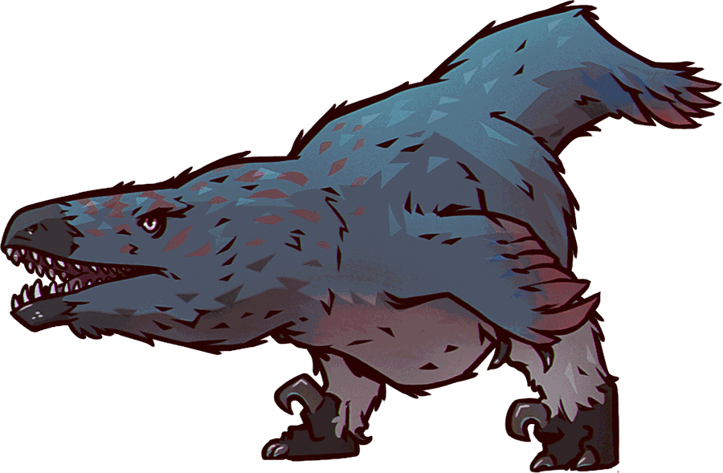

Alpha · built in the open
Utah
A Bluefin-family GNOME 51 workstation built on Fedora Hummingbird rather than Silverblue. Every desktop package it ships is rebuilt from source against that base by its own factory, and every image is bootc-native and digest-pinned.
Named for Utahraptor ostrommaysorum, the largest known dromaeosaur — and, like the image, mostly feathers over a very fast skeleton.

- Packages installed
- —
- Documented gaps
- —
- Image flavors
- 4
- Desktop
- GNOME 51
Build status
Live from the GitHub Actions API for the pipelines that gate a release. Each card shows the most recent run on the branch named.
Loading current run conclusions…
What the image ships
Generated from packages/bluefin.toml and packages/utah.toml
by scripts/generate-site-data.py, so this list is the one the
image build actually resolves. It cannot drift: just check fails
when it does.
No package matches that search.
Known gaps
Packages Bluefin ships that no repository Utah enables can provide. Each one carries a tracking issue, by rule — this is the documented debt, not a silent omission.
Roadmap and feature requests
Live from the issue tracker. Anything labelled or titled as a tracker is surfaced first; the rest is what is open right now.
Loading open issues…
The base
Fedora Hummingbird
Hummingbird is Red Hat's minimal, bootc-native Fedora base: a bootable
container image with a server-shaped package set, its own
hum disttag, and no desktop at all. Utah is what happens when
you put a full GNOME workstation on top of it.
That choice is the reason this project has a package factory. Hummingbird ships the bootable base and rebuilt core libraries; it does not ship GNOME 51, so utah-packages rebuilds the entire desktop dependency graph from upstream sources against that exact ABI, and publishes it as an OCI repository Utah pins by digest. Anything Hummingbird already provides, Utah takes from Hummingbird.
- Base image
quay.io/hummingbird-community/bootc-os - Disttag
hum1 - Package repo
public-hummingbird-x86_64-rpms - Utah addsGNOME 51, firmware, desktop services